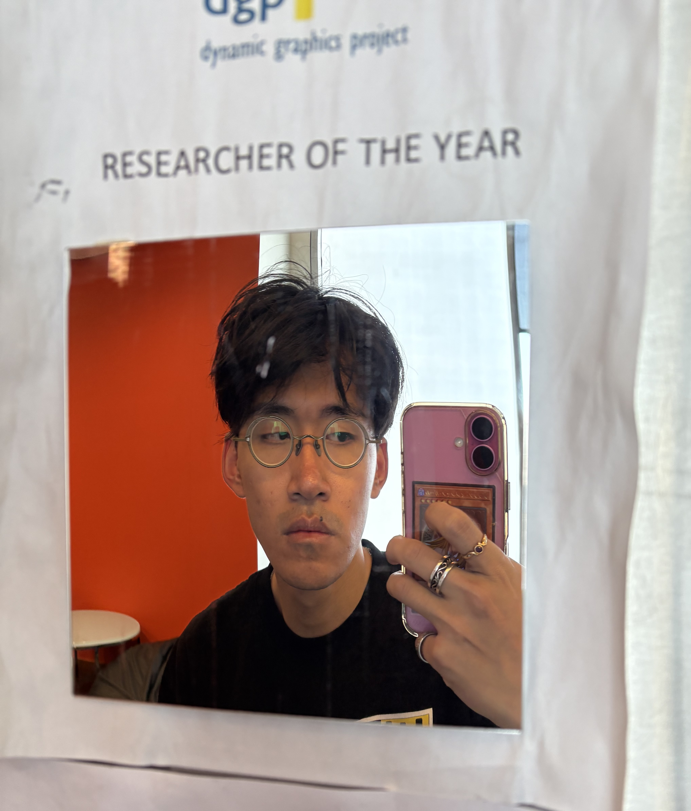

Patrick Yung Kang Lee
Department of Computer Science · University of Toronto
(≧▽≦)/ Greetings fellow travellers! I am a 2nd-year PhD student at the University of Toronto studying computer science. I am fortunate to be advised by Carolina Nobre in the Human Interaction Visualization Lab. I am also currently a Junior Fellow at Massey College.
My primary research interest is the socio-technical impact of AI technologies that mimic human likenesses. I like to describe myself as a sociologist "hiding" in the computer science department. My other research interests include AI companionship, qualitative research methods, and CS education.
Prior to my PhD, I completed my BSc in Computational Intelligence & Design at the University of British Columbia where I received the Bill Aiello Memorial Award (for academic excellence and leadership) and the Rick Sample Memorial Award (for research).